← 返回阅读库 · 原论文目录
论文讲解阅读文档 · 表征学习 · v188
Wasserstein Contrastive Representation Distillation WCoRD[2012.08674]
视频时长 00:19:40；讲解文字 9,047 字符；提取讲解画面 43 张。按视频原顺序阅读，每段文字保留时间戳。
文字来自整段视频的自动语音转写，按自然停顿分段，并与 PPT / 论文页面 / 演示画面对齐。未将讲解压缩为摘要；术语、数字和口述公式请结合画面及原论文核对。 阅读稿已校正规范部分明确术语误识别；原始逐字稿和每处修改记录另行保留。
讲解画面为源视频截图（640×360），不是可编辑 PPT 文件。全片按每秒 2 帧扫描内容变化，逐步展开页保留；连续动画保留代表画面。清晰度受源视频限制。
下载完整资料包 · 含离线 HTML、PDF、Word、全部 PPT 画面和字幕。
原论文与材料
Wasserstein Contrastive Representation Distillation · 下载完整 PDF（12 页）
按时间阅读
00:00:00–00:00:40 · 画面 001
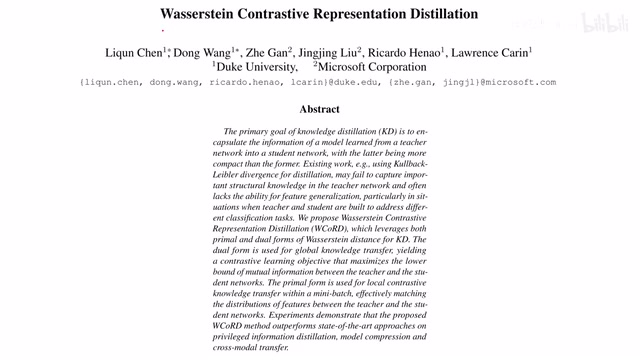
00:00:00–00:00:40 · 画面 001大家好啊今天我们来快速的水一篇论文 Versus Contrastive Representation Desolation 好嘛这一个标题四个词一共三个是名词性的那从标题呢你可以看到首先它是做这个 Knowledge Desolation 就是从一个大的网络或者说是一个 Pretrain 好的一个网络我们把它的这个知识呢灌到一个小的网络里然后呢在这其中呢它包含了这个 Contrastive Loss 用它呢来增强我们的这个 Representation 的性能那么具体是怎么样构建这个 contractive loss 呢这里呢作者用的是这个 over sustained distance 总之就是四个词呢把这篇论文的精髓给它概括清楚那么继续来看既然谈到这个 knowledge distillation 呢知识蒸馏的问题呢我们肯定是有一个 student teacher 这么一个 framework 这里呢我们直接看到作者提出的这个 loss 它呢有三部分首先呢是做这个知识蒸馏的这个 cross entropy 这个呢是非常常见的
00:00:40–00:01:33 · 画面 002
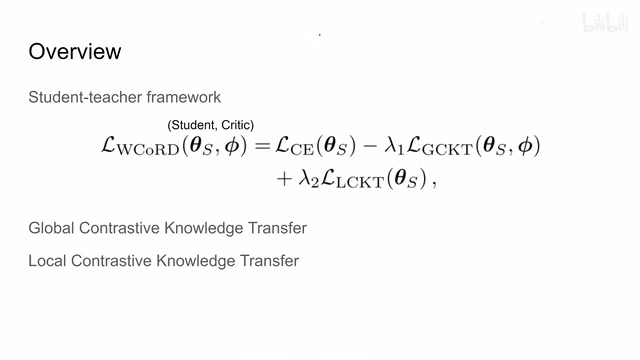
00:00:40–00:01:33 · 画面 002随后呢这里我们看到还有这个 global contrastive knowledge transfer 和这个 local contrastive knowledge transfer 两个这个 knowledge transfer 的 loss 具体是什么呢我们在之后马上会介绍那么同时呢有的朋友应该也注意到了我一个知识蒸馏的网络你说我训练一个 student network 这是很正常的事情我们怎么突然又多了一个 critic 呢而这个 critic network 呢它只出现在这个 global contrastive knowledge transfer
那么这个网络它是干什么用的呢那么下面呢我们就重点介绍这两个这个 knowledge transfer 的这个 loss 那么在正式开始介绍之前呢我们首先来回顾一下这个 versus distance 那么这个问题的提出呢跟我们的运输问题是息息相关的那我们上一次介绍这个问题还有包括这个距离呢是在这个 Facebook 的那个 spin 那一篇这个 self-supervised learning 里面那么这里呢我们做一个简单的回顾
00:01:33–00:01:47 · 画面 003
00:01:33–00:01:47 · 画面 00300:01:47–00:01:52 · 画面 004
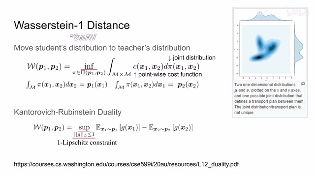
00:01:47–00:01:52 · 画面 00400:01:52–00:03:14 · 画面 005
00:01:52–00:03:14 · 画面 005那么怎么样定义一个运输问题呢就是假如说我这里有一个 distribution 你可以把它理解成这是有一堆货物它被堆成了这样一种形状那现在呢我有一个 target distribution 我其实呢想把这个货物呢摆成这种形状那么我就要开始算了我应该怎么样以最小的代价把这个 distribution 从这个形状挪到这个形状呢那么这个最小的代价呢我们就称之为这个 Worth Distance 那么更具体来说呢我们来看到这个式子假说我们有 M 这样一个位置吧我们呢从一个点挪到硬一点它随着这个点的不同它挪动的代价是不一样的这个呢就是用 C 来表示同时呢我们有一个挪动计划这里呢我们就描述成是这个 S1 和 S2 的这个联合分布
就是图里面这个图的样子其实它就是描述了我们该怎么样挪动这个 DC 比如是哎把它变成这个 target 这个形状那么使用这个挪动计划呢在对每一个挪动计划的这个 cost 进行积分的就能够得到我们这个挪动计划的总的这个消耗那么当然了所以我们肯定要取这个最小的消耗这个呢就叫做这个 versus distance 那么当然这个问题呢它是一个典型的自由化问题那么这里呢根据这个 kr 这个队友的性质呢我们呢可以把这样一个问题呢转化成它的队友问题这里呢我们假设引入一个网络这个 g 那么如果说这个 g 它满足这个 one lipschitz constraint 也就是 gx1 减去 gx2 它们的这个绝对值呢是不大于这个 x1 减 x2 的绝对值的那么如果满足这样的条件呢我们就可以把球解这个 versus and distance 这个过程呢转化成它的队友问题
00:03:14–00:03:16 · 画面 006
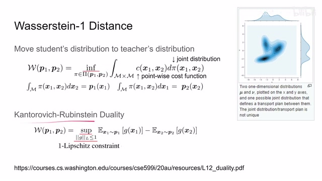
00:03:14–00:03:16 · 画面 00600:03:16–00:04:07 · 画面 007
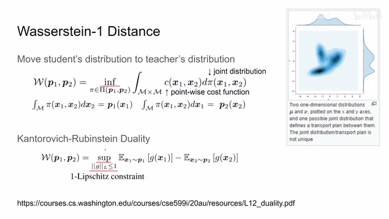
00:03:16–00:04:07 · 画面 007就长这样一个形式，也就是把 X1 和 X2 呢分别送到我们的 Network 里面，然后呢求他们最大的这个差值。那么关于这个 KR2 的推导呢，你可以在这个地址找到非常详细的描述。那下面呢我们就要来看到我们为什么要提这么一个事情。其实呢这事离现在不远，家里呢如果有老人呢可以回去问问说，这个在春秋战国时期啊，我们就来看这个 Global Constraint Knowledge Transfer 这个事情。
00:04:07–00:04:33 · 画面 008
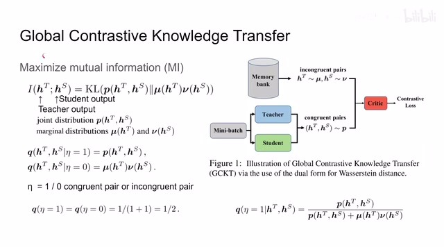
00:04:07–00:04:33 · 画面 008那么设计这个 Loss 的目的呢，是为了这个最大化这个 Mutual Information。我们这里呢有 Teacher Network，它会给我们一个 Distribution。如果把这个 Distribution 视作一个变量的话，那么 Student Network 它的输出呢也可以也会给我们一个 Distribution。那也把它视作一个变量，这两个变量之间它们的 Mutual Information 这样子呢就会让我们的 Student Network 向这个 Teacher Network 靠拢，达到我们知识蒸馏的目的。
00:04:33–00:04:34 · 画面 009
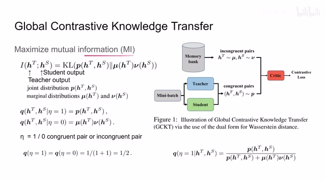
00:04:33–00:04:34 · 画面 00900:04:34–00:06:34 · 画面 010
00:04:34–00:06:34 · 画面 010那么对比一下之前我们在 DEIT 里面是使用的 KL divergence 直接把我们的 student network 推向 teacher network，这里我们是使用了 mutual information，它是有一个显著的区别。那么下面我们来看到根据定义，其实 mutual information 就是这两个东西的 KL divergence，那么一个是 joint distribution，一个是 marginal distribution。
这里 h 是 representation 上面的 t 表示 teacher networks 表示 student network，也就是说 student network 和 teacher network 它们的联合分布要尽量像 marginal distribution。那么这个是 mutual information 它本身的定义。那么接下来作者定义了一个事件叫做 eta，那么 eta 等于 1 的时候表示我是同一个样本塞到 teacher network 里面塞到 student network 里面。
这是得到一个结果。那么一旦等于 0 的时候就是我不同的样本塞到这个 teacher student network 里面。那么当然很显然，假如说我是使用的一个相同的样本塞到两个不同的网络里面，那么它产生的这两个 distribution 应该是有联系的。所以这个条件概率 q 它就应该是联合分布，因为这两个变量它此时不是相互独立的。
因为它们都是从一个图像里面产生的嘛，但是呢如果我们把两个不同的样本呢放到我们的这个网络里面，那么这个 student network 和 teacher network 它产生的这个 distribution 呢就应该是互相没有关系的。所以呢这里当 eta 等于 0 的时候呢，我们的这个条件概率呢它就应该是写成这样两个概率相乘的形式。那么通过这样的手段呢，我们就把这个 mutual information 里面这两个不太好直接表达的式子呢来给它拿了出来。
虽然到现在这一步呢它还是不太好表达，但是呢至少这个 ETA 它的概率呢我们是可以控制的。那假如说呢我每次找一个图像那把它都送到这个 teacher 和 student network 里面，这里呢作者叫它 congruent pair。那么同时呢我找到相同数量的这个 incongruent pair，也就是说我再去抽一组样本，只不过这个 pair 来说呢，我的 student 和 teacher network 它的这个输入呢是不一样的。
00:06:34–00:07:38 · 画面 011
00:06:34–00:07:38 · 画面 011那么我们当然可以控制这两个 pair 的比例嘛。这里呢我们先讨论一个最简单的情况，就是它俩的概率相等，就是每一个都是二分之一的这样一个情况。那么现在呢我们构建这样一个条件概率。那根据 BS 公式吧，它的分母嘛应该是这个东西乘上这个东西，也就是这个联合分布再乘上这个二分之一嘛。它的分母呢应该是这个 QHT 和这个 HS 就结束了。
但是呢你可以把它展开因为我们的一套呢只有两种情况每一种情况呢都是二分之一的概率那展开之后呢就是这个玩意加这个玩意都成了二分之一两个二分之一约掉呢我们呢就得到了这样一个性质那么这个式子呢其实它给了我们一个很好的性质我们把它拿到左边来那我们假如说把这两边呢同时呢上 log 那这个 log 上了之后呢那这里呢因为我们的联合分布呢它肯定是一个概率
00:07:38–00:07:42 · 画面 012
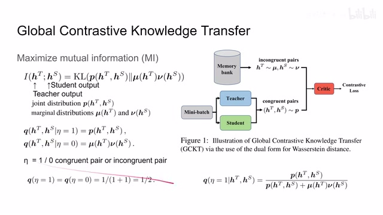
00:07:38–00:07:42 · 画面 01200:07:42–00:07:46 · 画面 013
00:07:42–00:07:46 · 画面 01300:07:46–00:08:30 · 画面 014
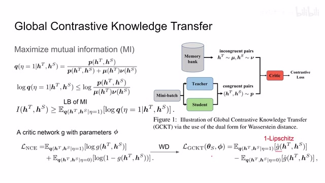
00:07:46–00:08:30 · 画面 014它是一个非负的值，所以呢我们有了这样一个不等式。那么这个不等式你看到右边这部分它是不是非常眼熟啊，它就是 kl divergence 里面 log 里面这一部分。那现在呢我们把这个等式两边都乘上这个联合分布的这个概率。那右边这一项呢就变成了我们之前说的这个 mutual information。那么左边这一项呢你大可以把它写成这样一个期望的形式。所以呢你可以看到这个式子它的期望呢。
就是我们这个 mutual information 的这个 lower bound。也就是说呢，我只要通过提升这个 lower bound 就可以提升这个 mutual information 达到我们想要的结果。那么下面呢我们来观察一下这个 lower bound 它呢是这个 given teacher distributionstudent distribution。那让我们判断这个 eta 等于 1 它的概率。那么为了做这样一个判断呢，很自然的我们就想到我们引入一个网络来解决它。
00:08:30–00:08:37 · 画面 015
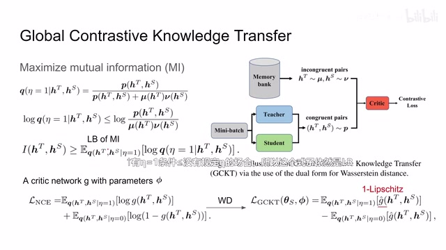
00:08:30–00:08:37 · 画面 01500:08:37–00:10:03 · 画面 016
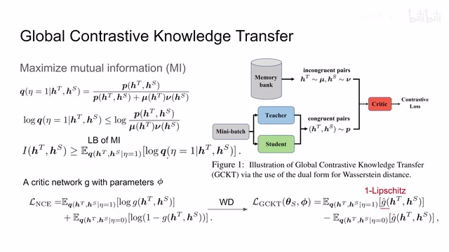
00:08:37–00:10:03 · 画面 016这个网络呢就叫做 critic network。这个 g 它里面的参数呢叫它 fi。这样子呢我们就可以得到一个 nce loss。那么我要让我的这个网络呢根据 teacher network 的输出和 student network 的输出呢来判断我的 teacher network 和 student network 它拿到的是不是同一个图像。那么这样一种设计呢其实呢它也是干的一种设计对吧。我的这个 student network。
不断的努力想要去骗过这个 credit。同时呢我们这个 credit 他也要来努力来区别说这两个输出是来自同一个样本呢还是来自不同的图像呢。那么这个呢是本文最核心的如何构建 contrast loss。那么当然故事并没有这么简单的结束啊。作者说我们的这个 loss 呢虽然它看起来已经可以用来训练了，但是呢在实际的训练过程中呢。
他呢经常会遭遇因为这个 sample 导致的这个数值啊不稳定这样一些问题。同时呢在很极端的情况下呢容易导致这个 modal collapse 也就是模型的坍塌。那现在呢我们把这个 versus descent 这个式子他的最有问题的这个式子给他搬过来。那么原来的这个 NCE loss 呢就变成了一个形如这样的式子。那么对比一下呢我们看到呢这边呢和这边一样。
00:10:03–00:10:08 · 画面 017
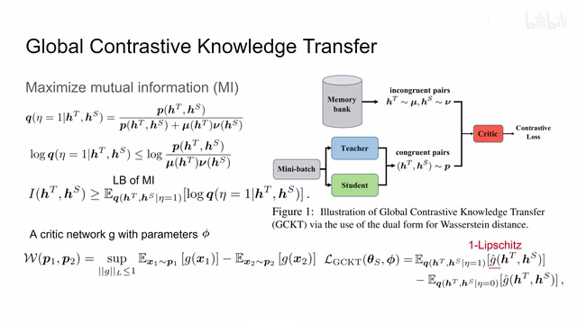
00:10:03–00:10:08 · 画面 01700:10:08–00:10:09 · 画面 018
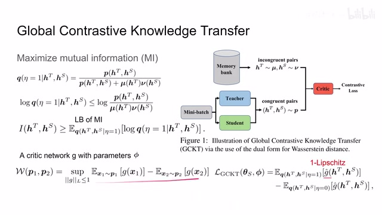
00:10:08–00:10:09 · 画面 01800:10:09–00:10:34 · 画面 019
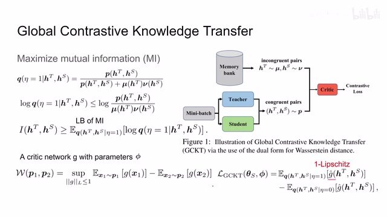
00:10:09–00:10:34 · 画面 019都是把两个不同的 distribution 给它送到同一个函数里面，然后求它们的两个的期望的差。然后同时我们是希望最大化这样一个差，也就是最大化这个 loss。那么对比一下之前的 NCE loss 它的形状还有它的符号过来是一样的。非常巧妙的一个转换。
00:10:34–00:10:39 · 画面 020
00:10:34–00:10:39 · 画面 02000:10:39–00:10:40 · 画面 021
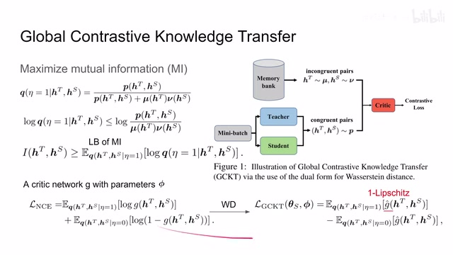
00:10:39–00:10:40 · 画面 02100:10:40–00:11:27 · 画面 022
00:10:40–00:11:27 · 画面 022那么经过这样的一个转换之后呢，首先我们的这个 loss 依然保持了原来的这个功能，就是提升了这个 lower bound。那么其次呢它还有一个把这两个 distribution 也就是所有的这些匹配的样本还有不匹配的样本把它们这些所有的 representation 拷拢了一起的这样的一个效果。那这样子呢就一定程度的避免了这个模型的坍塌。
换句话说呢，这个 versus distance 呢给我们提供了一种 regularization，让我们的这个 critic 的训练起来不要太离谱。那总的来说呢，是一个非常巧妙甚至有一点玄学的设计。那么当然呢，我们直接做这样的转换呢并不是没有代价的。首先呢，就是我们的这个 critic 他在这里呢变成了 g hat，因为呢我们这个队友呢他的成立的条件呢是这个 one lips
00:11:27–00:12:33 · 画面 023
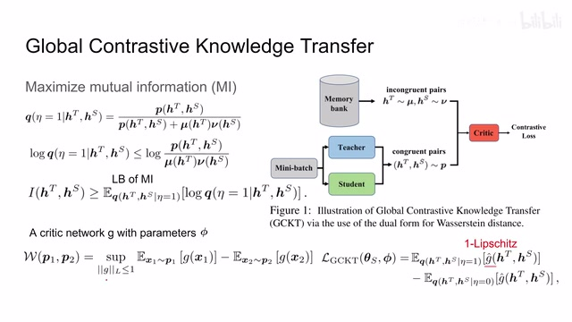
00:11:27–00:12:33 · 画面 023所以我们要对 credit 的网络进行一个约束，把它满足这个条件。那么其次就是我们一开始构建了一种非常理想的情况，也就是 eta 等于 1 和 eta 等于 0 的时候它们的样本的数量是一致的。在实际的操作中我们看到，我们是从我们的 data loader 里面采一个 mini-batch 送到我们的 teacher student network 里面，这个是 congruent pairs，也就是一幅图像送两个网络同时我们会维护一个 memory bank，它就是把我们之前所有的网络的输出都放到这个 bank 里面。然后我们通过在这里面随机的采样就能够采出不匹配的两个 representation。那么显然因为这些东西它是原来计算过的，获取起来是非常迅速的，你只要采样就行了。而这些东西要过一些大的网络，所以很多时候我们是经常是有很多的这种不匹配的 pairs
和这个匹配的 pairs 做对比。所以呢，这里呢我们要稍微做一个改动，也就是在这里加一个 m ，也就是我们有更多的这个不匹配的这个 pairs。这个小的改动。那么现在呢，关于这个到此的最后一点疑问呢就是我们怎么样加这个 1dps 这个约束啊。那么其实这个呢也是非常简单的。那么在之前的工作中呢，他们使用了这个 gradient penalty，就是你限制这个函数的 gradient
00:12:33–00:12:50 · 画面 024
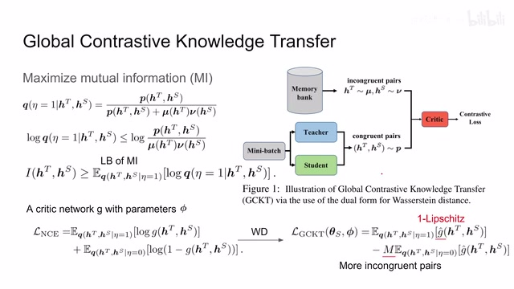
00:12:33–00:12:50 · 画面 02400:12:50–00:13:21 · 画面 025
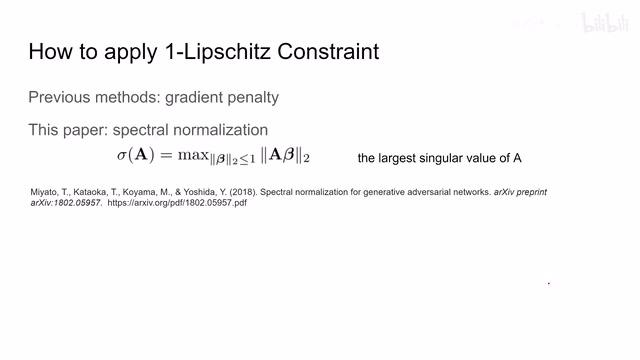
00:12:50–00:13:21 · 画面 025是一个很暴力的方法。那么当然在这篇论文里面呢，它是引用了这篇这个 Spectral Normalization 这篇工作，就是我们的原来一个矩阵 A 呢我们去主让它的最大的这个奇异值，这样子呢就能够把这个 One Lipschitz 这个 constraint 给它应用起来了。那么具体的关于它的原理和推导呢，非常推荐你去看这篇论文。那么以上呢就是我们的这个 Global Constraint Knowledge Transfer
00:13:21–00:13:25 · 画面 026
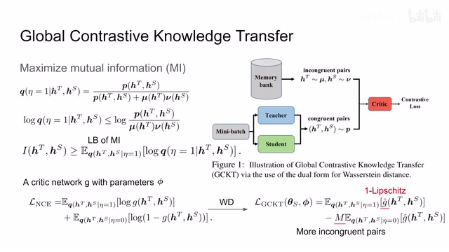
00:13:21–00:13:25 · 画面 026那么在此基础之上呢，作者还提出了一种叫做 local contrastive knowledge transfer。那么这一部分的核心的思想呢，它的意思是说，假如说我的 student network 它有一个样本，它产生一个 distribution，正常的情况下呢，我们是把它推向它的这个 teacher network 给出了这个 representation，这个是没有问题的
00:13:25–00:15:25 · 画面 027
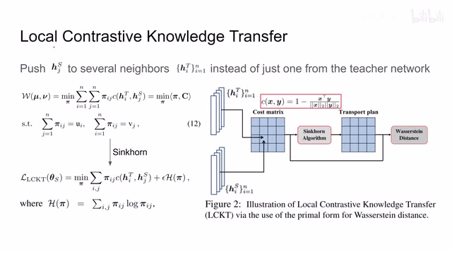
00:13:25–00:15:25 · 画面 027但是呢，你想你在一个 batch 里面只有一个样本是你的 positive sample，其他的样本呢都是 negative sample，这种样本呢极大的不平衡呢会对我们的学习造成困难。所以呢，在这篇论文中呢，作者说我不仅要把这个 student network 推向我们 teacher network 对应的那个 positive sample同时呢，它要把它推向这个 teacher network 里面输出的这个 positive sample 它的几个邻居。这样呢来增加我们 positive sample 的数量。那么既然确定这个思路呢，那摆在我们面前一个很现实的问题，那我应该怎么样去把我们的这个 positive sample 的周围的这些邻居给它快速的找出来呢，而且要而且要每一个样本都要去找。那么既然我们上一个环节中已经逮住了这个 worth and distance，我们就逮着一个羊可尽好对吧
那么在这里呢，同样的，我们就把这个运输的问题呢解到底。那这里呢，我们看到，假如说我们的 teacher network 他给我们的一堆这个 representation，那我们的 student network 他给了我们一堆 representation。首先呢，我们计算一个 cost matrix，也就是转移的这个矩阵，其实就是两个这个 representation 他们之间的相似程度。那假如说我们的 teacher 有四个这个 ，student 有四个对吧，我们就是一个四乘四的矩阵。
那么这个 cos 怎么计算呢这里用的是这个 cos similarity 长这个样子然后呢根据这个 cos 的矩阵呢我们就可以提出这个我们的运输的计划我们要怎么样把这个 student 的这个 distribution 变成这个 teacher distribution 相当于顶着这个 cos 的基础上呢我们找到一个 cos 的最低的这个转移的方案把这边这个 student 这些样本呢给它转移到相近的这个 teacher 这个样本上那么具体怎么办呢之前呢我们在这个 SWAV 里面那篇论文里面也介绍了
00:15:25–00:16:01 · 画面 028
00:15:25–00:16:01 · 画面 028有了这个 sinkhole 这个方法，那么通过 sinkhole 这个方法呢，得到一个运输的计划。那有了这个计划之后呢，我们就可以计算我们的这个真正的转移的这个 cost，也就是我们的这个 versus distance。那么显然，我们既然是希望这个 student network 它接近这个 heater network，那么这个 distance 它肯定是越小越好。所以呢，这里呢，我们就用了一个 versus distance 这个转移问题的这个原问题来把这个 loss 呢给它定义了出来。
这个呢，叫做 local contrastive knowledge transfer，它的这个 loss 呢就是这个 Sinkhorn 方法找出来这个 versus distance 它这个距离的本身。那么总的来看，本问题的方法呢，知识蒸馏的过程就包含三个部分。第一个首先是传统知识蒸馏 cross entropy，这个没什么。第二个呢是这个 global knowledge transfer，之前我们介绍了用这个 versus distance 它的对偶的问题，提出了一个这个 quadric network，然后呢用相同的这个样本和不同的样本。
00:16:01–00:16:02 · 画面 029
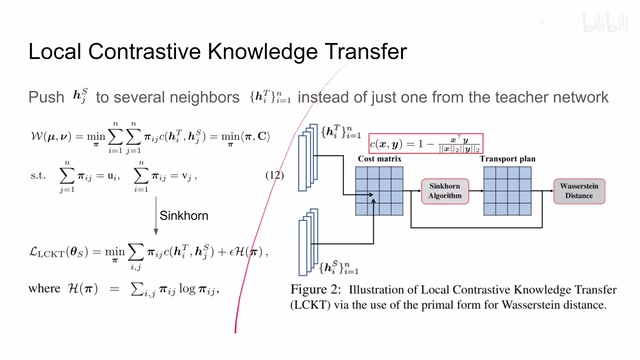
00:16:01–00:16:02 · 画面 02900:16:02–00:16:04 · 画面 030
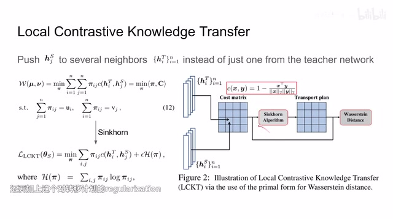
00:16:02–00:16:04 · 画面 03000:16:04–00:16:08 · 画面 031
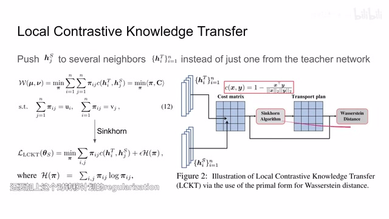
00:16:04–00:16:08 · 画面 03100:16:08–00:16:46 · 画面 032
00:16:08–00:16:46 · 画面 032这样的这个组合来呢，构建出一个 contrastive loss。因为呢，我们是要最大化这一项，所以这里呢，你可以看到它是一个负的 lambda。那最后呢，是第二项就是我们这个 local knowledge transfer 啊，也就是这直接的计算这两个 distribution 之间的这个 verse and distance，得到了呢这样一项。然后具体在计算的时候呢，我们每次采样，然后呢算这个 teacher networkstudent network 它的输出。
00:16:46–00:16:47 · 画面 033
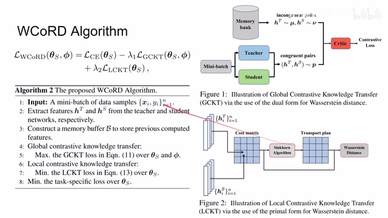
00:16:46–00:16:47 · 画面 03300:16:47–00:17:50 · 画面 034
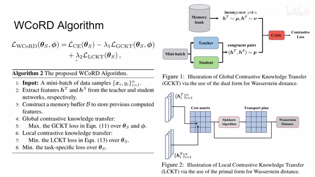
00:16:47–00:17:50 · 画面 034那得到这些结果呢，同时别忘了塞到我们的这个 memory bank 里面。然后呢，开始计算这个 global knowledge transfer，就是这边采样然后加上这边的采样放到 credit 里面，算这个 contractive loss。这一块这一块过程呢，把我们的 student network 和我们的 credit 啊一同的来进行优化。算完之后呢，我们再算这个 local contrastive knowledge transfer。那这个时候呢，我们就不需要这个 credit 了。
我们只需要把这个 student 和 teacher network 的这个输出呢来再次利用一下算一下这个 cos 的 matrix 然后呢 sinkhole 一接算出这个 versus distance 那么这个过程呢我们就只优化这个 student network 就可以了那么最后呢我们记得把这个 cross entropy 这个 loss 呢也给它优化上那么这样呢就是一次优化的循环我们呢不断的循环就可以了这个呢就是本文提出的算法那么介绍完了本文的这个核心的方法呢我们来看作者汇报的一些结果
00:17:50–00:18:32 · 画面 035
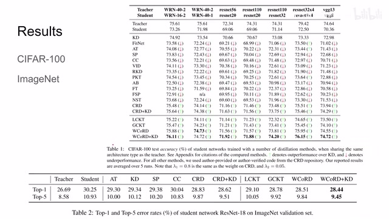
00:17:50–00:18:32 · 画面 035首先呢是在 CIFAR 然后这个 ImageNet 上你可以看到了上面是 StudentNetwork 和 TeacherNetwork 它们的结构以及它们的这个原始的直接训练的性能那么作为 BasedOn 这个 KnowledgeInstallation 呢它肯定是在 StudentNetwork 的基础上性能呢有提升对比了其他的这些方法那么可以看到本文提出的方法呢如果哪怕你是只使用这个 LocalKnowledgeTransfer 还有这个 GlobalKnowledgeTransfer 其实它都可以提升性能
那么如果两个加起来那更加的快乐了同时呢再加上支持征流最后呢就是得到最好的一个结果那注意这里呢它的表达呢是有一点让人容易产生误会的就是因为我们之前算 loss 的时候呢我们看到有三项 loss 其实这个呢就是它所说的这个支持征流所以呢至于这个 WQRD 呢它应该是只包含这个 local knowledge transfer 和这个 global knowledge transfer 只包含这两项加上这个 KD 呢才是说那三项都有这个呢应该注意一下
00:18:32–00:18:36 · 画面 036
00:18:32–00:18:36 · 画面 03600:18:36–00:18:55 · 画面 037
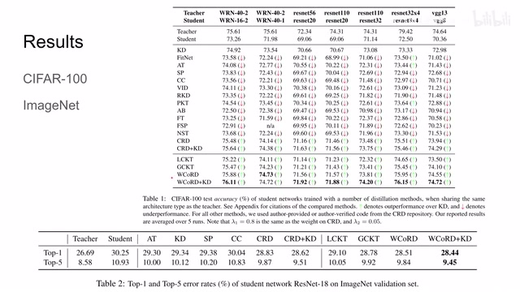
00:18:36–00:18:55 · 画面 037那么还有像 UGNet 对吧同样的结果做了一些对比可以看到一些不错的数字那么当然这些实验都是在这个 Teacher Student Network 他们两个网络的结构很相似的情况下只是他们的尺寸不同这种情况下对比了那么对比一下不同的网络的结构比如说从 VGG13 牵制到 MobileNetV2 对吧那么在这样一种构型情况下本人的方法依然能够提升性能是一个不错的设计
00:18:55–00:18:56 · 画面 038
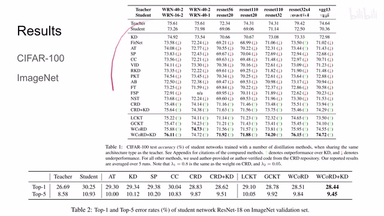
00:18:55–00:18:56 · 画面 03800:18:56–00:19:04 · 画面 039
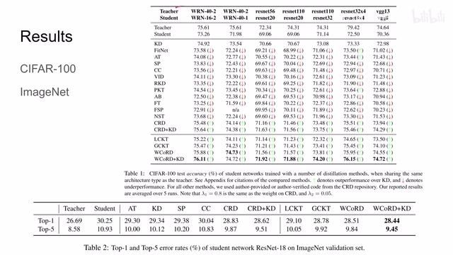
00:18:56–00:19:04 · 画面 03900:19:04–00:19:13 · 画面 040
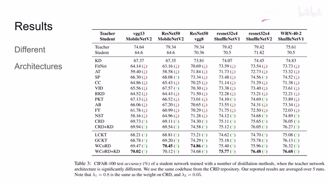
00:19:04–00:19:13 · 画面 04000:19:13–00:19:15 · 画面 041
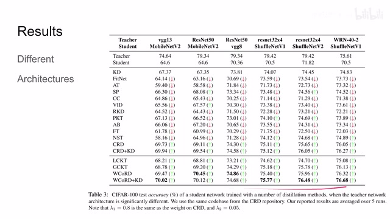
00:19:13–00:19:15 · 画面 04100:19:15–00:19:39 · 画面 042
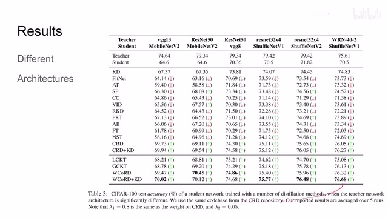
00:19:15–00:19:39 · 画面 042那么此外的作者还汇报了一些 ablation,包括如何确定这些超参数等等,如果你感兴趣的话,非常推荐你去阅读原文。那么总的来说呢,本文是用 Worst Sentences,把它用到知识蒸馏里面,提出了一种数学上相对优雅,实际效果也不错的这样一种设计,还是挺有意思的一篇工作。那么以上就是我对这篇论文的简单的分析,感谢您的收看,再见。
00:19:39–00:19:40 · 画面 043
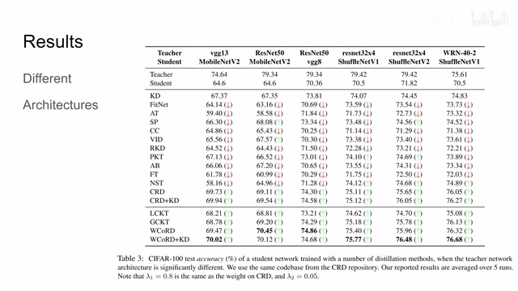
00:19:39–00:19:40 · 画面 043转写与来源说明 · 0 个自动复核提示
保留 43 个原始语音片段，0 个片段触发自动复核提示。提示仅用于定位可能的术语、重复或识别问题，不等于已确认错误。
讲解画面为源视频截图（640×360），不是可编辑 PPT 文件。全片按每秒 2 帧扫描内容变化，逐步展开页保留；连续动画保留代表画面。清晰度受源视频限制。
原视频：paper/合集_2026-10-16_表征学习/[论文简析]Wasserstein Contrastive Representation Distillation WCoRD[2012.08674].mp4
SHA-256：5fa8a3e735f962c4e4996dae44f3531e4f233e505b2360f215a44b6d16b4b77d
全文按视频语音与画面制作。原论文可从上方链接下载；完整资料包保留全文、原始逐字稿、字幕和校对记录。